再履バス案内の使い方
JavaScriptを有効にしてお使いください。
画面全体
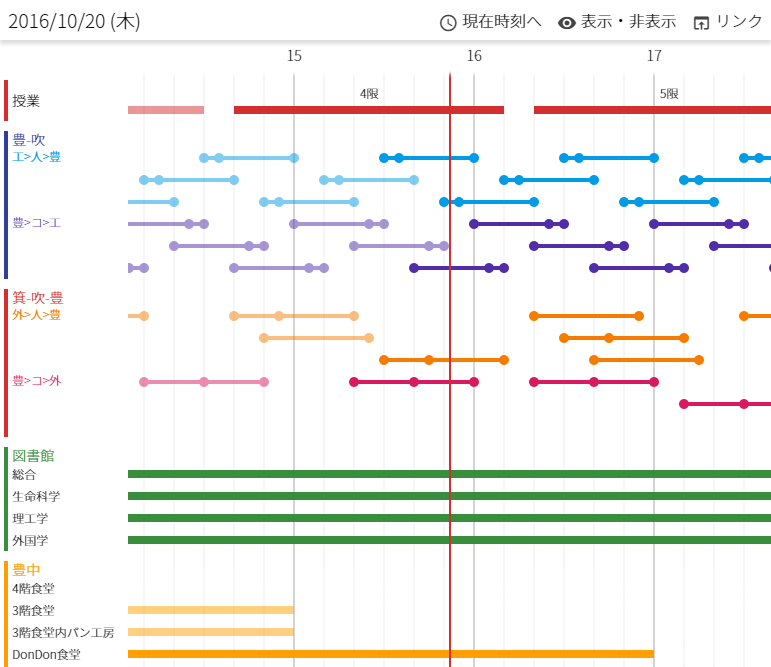ヘッダー(上)と見出し(左)と中身(真ん中)があります。
ヘッダー
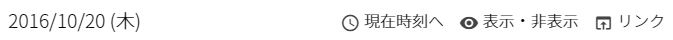現在の日付(日本時間)と、いくつかのボタンがあります。
| 現在時刻へ | 中身が現在時刻までスクロールします。 |
| 表示設定 | 表示する項目を設定できます。 |
| リンク | 大阪大学公式の時間情報などへのリンクです。 |
見出し
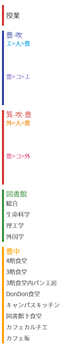時間を表示する項目のタイトルが縦に並んでいます。
バス
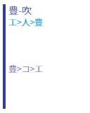上に一つ区間が、下に方向がいくつか表示されます。上の画像では、「豊-吹(豊中・吹田間の略)」が区間、「工>人>豊」と「豊>コ>工」が方向です。
「工>人>豊」は「工学部前→人間科学部前→豊中地区」の略で、「豊>コ>工」は「豊中地区→コンベンションセンター前→工学部前」の略です。何の略かわからなくなったら、その文字上をクリックしてみてください。下図のように、正式名称が表示されます。
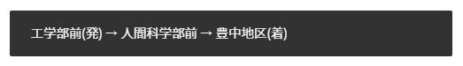図書館・食堂
見出しをクリックすると、
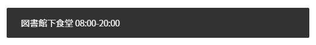上のように名前と営業時間が表示されます。
中身
10分ごとに薄い目盛りが入っています。
現在時刻
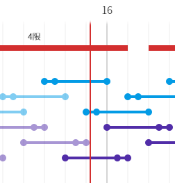現在時刻は赤い線で表されています。終わってしまったもの(線より左にあるもの)は半透明に表示されます。
バス
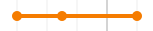この一本の横線がバスの一つの便を表します。もしこのタイトルが「工>人>豊」だったら、一つ目の●が「工学部前」、二つ目が「人間科学部前」、三つ目が「豊中地区」で停まることを意味します。
変わった運行
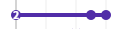上のように一つ目の●に「2」という文字が書かれている便は、2本運行することを表します。
一つ目の●に触覚が生えている場合は、そのバスは微生物病研究所(降車専用)で停留します。
詳細
バスの便をクリックすると、
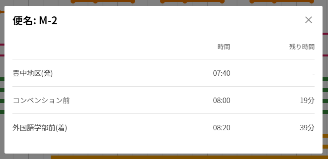上のような詳細ウィンドウが表示されます。
閉じる際には、ウィンドウの外側か右上の×ボタンをクリックしてください。ブラウザの戻るボタンで閉じることはできません。
図書館・食堂
図書館・食堂も、棒をクリックすると詳細ダイアログが表示されます。
休日・祝日
バスは休日・祝日・長期休暇や学校行事などの日に運休します。休日と祝日には「運行しない可能性があります」と警告を表示していますが、長期休暇や学校行事の日には特に何も表示しません。後でそういう機能つけるかもこのサイトに素早くアクセスする
- PCから: お気に入りに追加するか、任意のフォルダにショートカットを作成してください。
- スマホから: お気に入りに追加するか、ホーム画面にショートカットを追加してください。
たとえばiPhoneのSafariでは、下の画像のようにwebサイトをホーム画面に追加することで、普通のアプリのように起動することができるようになります。
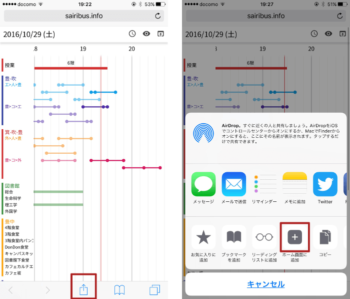